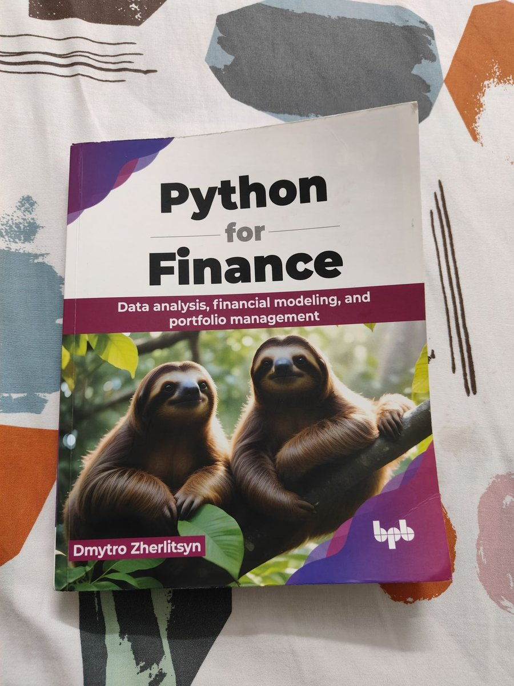
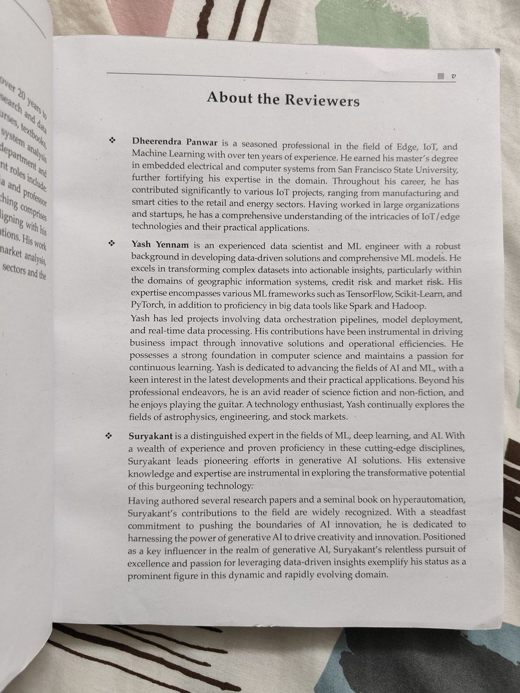
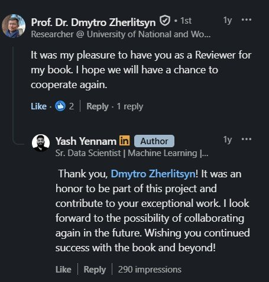

Earlier this year I took on a project outside my usual day job: technical reviewer for Python for Finance, Dmytro Zherlitsyn's book published by BPB Publications.
The book walks through time-series analysis, portfolio management, and market-risk assessment, all built around practical Python — aimed at finance professionals and data folks who want to stop treating the two disciplines as separate skill sets.

My job as reviewer wasn't to proofread prose — it was to sit with the code. Every model, every risk calculation, every portfolio-optimization routine had to actually hold up: correct Python, correct math, and assumptions that wouldn't quietly fall apart on real market data. Having spent time on market-risk pipelines at Bank of America and credit-risk modeling at U GRO Capital, this was the part I could push on hardest — flagging where an example glossed over an edge case, or where a cleaner implementation would make the underlying finance easier to trust.
It was a genuinely good use of a few weekends. Technical review is unglamorous work — you don't get a byline on the cover — but it's where a book earns whether it's actually useful in practice or just reads well. Seeing the final print copy, with the reviewers credited by name, made the weekends feel worth it.

A little while after the book shipped, the author, Prof. Dr. Dmytro Zherlitsyn, left a note on my post about it — generous words about the collaboration, and an openness to working together again. It's a small exchange, but it's the kind of thing that makes freelance technical work feel like more than a line on a resume.

If you're a practitioner trying to bridge finance and data science — or a student trying to see what production-grade financial Python actually looks like — the book is worth a look: Python for Finance on Amazon or directly from BPB Publications.
← Back to Updates